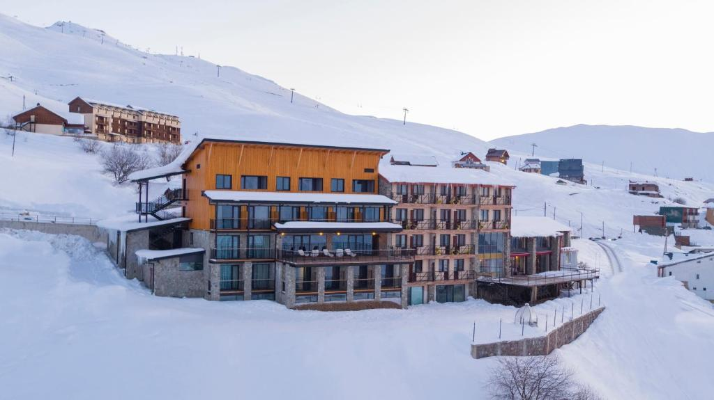
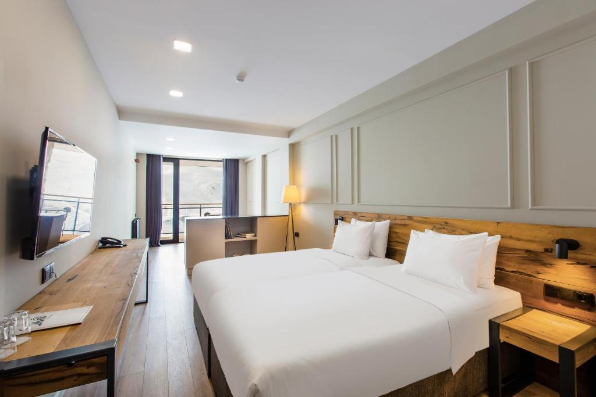
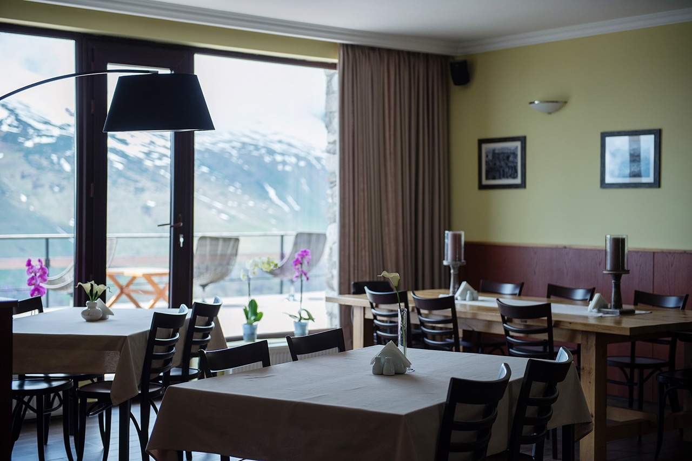
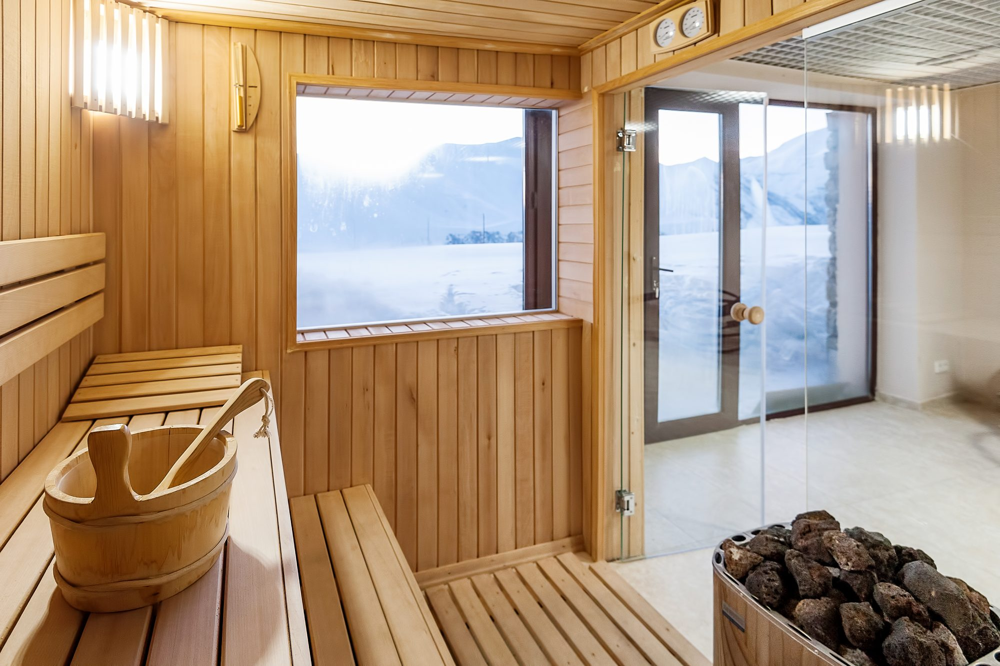
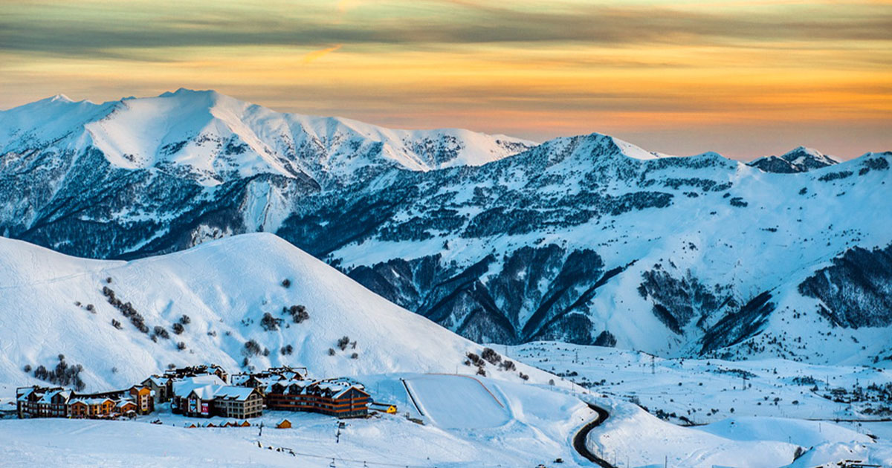

Hotel Monte
Perched in Upper Gudauri with panoramic views of the Caucasus Mountains, Hotel Monte combines modern comfort with warm Georgian hospitality. Just a short walk from the ski lifts, the hotel offers cozy, well-appointed rooms—all with private balconies overlooking the mountains—alongside a restaurant serving Georgian and European cuisine, a stylish lounge bar, a relaxing sauna, a small indoor pool, sunny terraces, and a games lounge. Whether you are here for winter skiing or summer mountain adventures, Hotel Monte is your perfect base in Gudauri.

Rooms
Hotel Monte offers a variety of room categories to suit every guest—from cozy double rooms perfect for couples, to spacious family rooms designed for comfort and togetherness. All rooms feature private balconies with stunning mountain views, comfortable beds, and modern amenities. Whether you are seeking a romantic getaway or a base for your family’s Gudauri adventure, you will find the perfect fit with us.

Restaurant
Our on-site restaurant serves a delicious blend of traditional Georgian and European cuisine, crafted from fresh, local ingredients. Guests can enjoy their meals indoors or dine al fresco on our spacious terraces, which offer stunning mountain views. For a more relaxed atmosphere, our stylish lounge bar also features a terrace—perfect for sipping cocktails while soaking in the breathtaking scenery.

Services
At Hotel Monte, we strive to make your stay as convenient and enjoyable as possible. In winter, we offer a free shuttle service to the nearby Shino ski lift, along with ski and snowboard rentals and relaxing massage treatments to soothe your muscles after a day on the slopes.
All year round, guests can unwind in our sauna and small indoor pool, challenge friends and family in the game room, or explore the mountains with our mountain bike rentals. For business travelers, we provide a fully equipped conference room to meet your professional needs.

Events
Hotel Monte is the perfect venue for your special occasions and celebrations. Each year, we host festive events like our popular New Year’s celebration, creating unforgettable memories with music, dining, and fun.
We also specialize in wedding ceremonies and elegant wedding dinners, offering stunning mountain views and attentive service to make your big day truly magical.
For our corporate clients, our fully equipped conference room provides an ideal setting for meetings, conferences, and team-building events, combining business with the inspiring beauty of Gudauri.

Gudauri
Nestled high in the Caucasus Mountains, Gudauri is a premier year-round destination offering breathtaking landscapes and exciting activities for every traveler. In winter, it’s a skier’s paradise with vast slopes and modern lifts, while summer invites hiking, mountain biking, and paragliding over stunning vistas. Visitors can also explore nearby natural wonders, enjoy vibrant local culture, and savor authentic Georgian cuisine. Whether you seek adventure or relaxation, Gudauri promises an unforgettable mountain escape.
